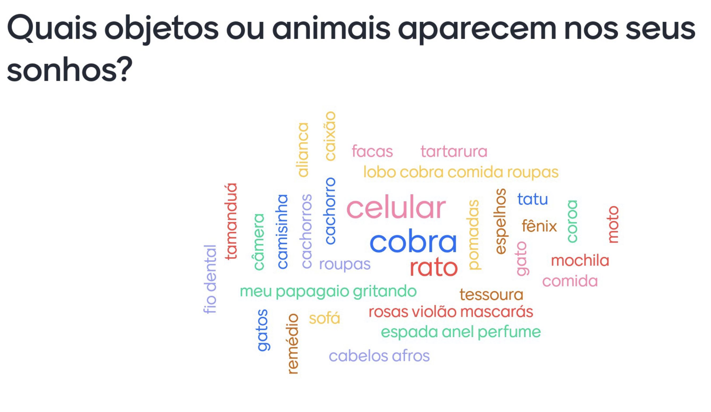
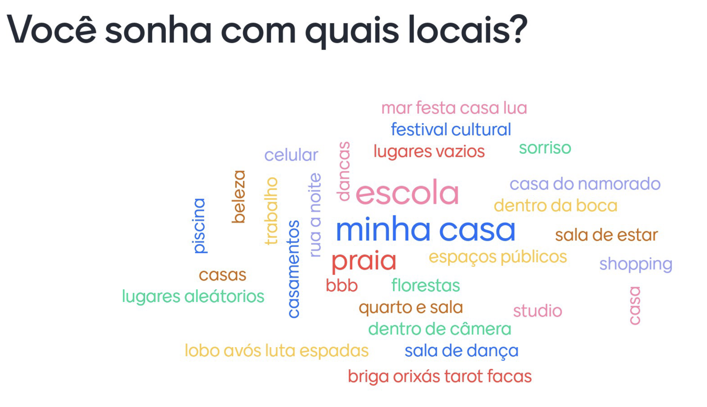
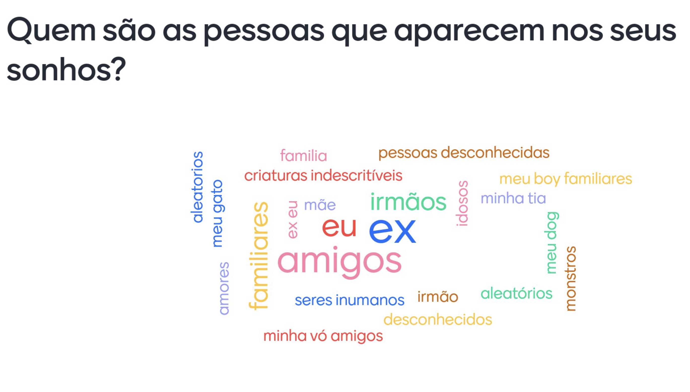

- Fase 1: adormecer
- Fase 2: os sentidos
- Fase 3: o mergulho
- Fase 4: REM ou o sono profundo
- Sonhar desperto
Fase 1: o adormecer
Começamos nossos encontros. A princípio, sabendo muito pouco uns dos outros. Um grupo de pessoas, interessadas em falar sobre o que significam os sonhos, para si mesmas e para o coletivo. Nesse primeiro momento, tivemos o apoio das arte-educadoras Beatriz Cruz e Vânia Medeiros, realizando uma primeira proposição: que criássemos um diário dos sonhos, conforme proposto por Sidarta Ribeiro. Para isso, também utilizamos o mantra proposto por ele:
"vou sonhar, lembrar e relatar"
"O processo do sonhário, exigiu de cada um de nós uma pausa, um direito que o sistema tem nos negado. Focar e pensar em nossos sonhos teve uma função quase que terapêutica. Às vezes dolorosa. nossos sonhos guardam dentro de si nossas intimidades e vulnerabilidades."A partir da experiência com o sonhário, nos desdobramos em mais algumas aventuras. Uma delas foi a experiência de dormir ao ar livre. Fomos inspirados pela artista Laurie Anderson, que realizou uma performance de anotar os sonhos que tinha enquanto dormia em locais públicos.
- Becky
"Tivemos um processo incrível com a Bia e a Vânia, foram experiências muito gostosas de serem vividas e marcantes. Dormir ao ar livre, foi a primeira vez que fiz algo assim a vida inteira, sentir como o mundo lá fora, os sons e texturas iriam interferir no nosso sono/sonhos foi algo único de se viver. Elas trabalharam muito com atividades manuais, desenhos, expressões atravéz das escritas, cores papéis e criatividade. Foi boa a experiência de dançar e fazer movimentos malucos ao som dos instrumentais que elas colocavam, gerando um espaço sem julgamentos onde todos éramos livres pra deitar e nos movimentar como quisessemos. Quando o processo delas acabou ficamos tristes pois achamos que elas iriam estar presentes até a reta final mas ainda assim, jamais vamos nos esquecer do que elas ensinaram."
- Raquel
Ao fim da nossa fase com as educadoras, elaboramos um tarot baseando nas imagens mais comuns presentes em nossos sonhos, em um processo coletivo de descoberta. O resultado pode ser visto abaixo:
Fase 2: os sentidos
Munidos de palavras e imagens que carregaremos ao longo do processo, começamos os trabalhos com o corpo.
Fase 3: o mergulho
Nesta fase, tivemos o grande privilégio em receber a educadora de áudio visual Erika Kogui, que nos propôs uma oficina de criação baseada nos elementos mais comuns de nossos sonhos. A partir deles, criamos um áudio com uma paisagem sonora onírica, onde tentamos através da tecnologia binaural emular uma experiência narrativa de sonhar."No primeiro encontro com Érika, ela nos trouxe algumas perguntas. A partir delas, montamos nossa primeira nuvem de palavras utilizando uma plataforma de enquetes.
  
Descobrimos que sonhamos muito com casa; escola; dente; rato, etc. Despertou muitas curiosidades, pois sonhamos com várias coisas em comum. Criamos uma estrutura de "roteiro" para termos por onde seguir com o nosso sonho em áudio, com a direção da educadora mostrando para nós como que, alguns efeitos sonoros de filmes são produzidos (Foley) e a Erika, propôs produzir esse sonho imersivo com um Microfone Binaural. Logo, abaixo você irá ouvir um sonho por três grupos de Sonhadores Vivos. Se entregue, relaxe, feche os olhos e sinta como é mágico sonhar acordado, assim como nós sonhamos quando produzimos esses áudios. Apenas sonhe e se entregue!"
- Gabi Duarte
Fase 4: REM ou o sono profundo
O nosso processo chega ao fim. Munidos de tudo que aprendemos e compartilhamos ao longo desses meses, encabeçamos um processo coletivo de criação. Nos reunimos para pensar em como compilar todos esses aprendizados, tudo o que foi produzido por nós. O resultado foi este blog, uma página processo contendo fragmentos dessas vivências, e um produto audiovisual com alguns dos nossos estudos de corpo. Juntamente aos educadores Eduardo Leitte e Tathiana Valério, definimos um conjunto de jogos teatrais que foram registrados com o suporte de Johny
Sonhar desperto
Este é o final do nosso ciclo junto ao Sesc Consolação. Mas não é o fim deste sonho. Seguimos juntos em um coletivo, o Sonhário Vivo, onde pretendemos continuar compartilhando, aprendendo e sonhando.